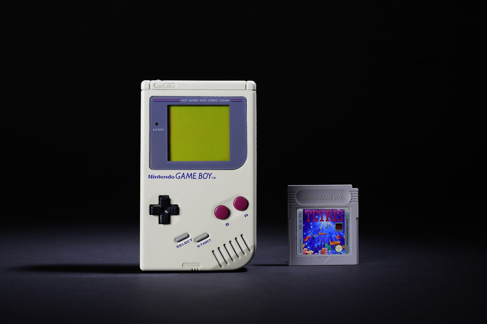

It was a handheld console that aombined parts of the successful NES and Nintendo's earlier handheld electronic devices. It had an 8-bit Z80 processor with a monochrome LCD display and a 4-channel stereo sound. All original Game Boys came with Tetris.